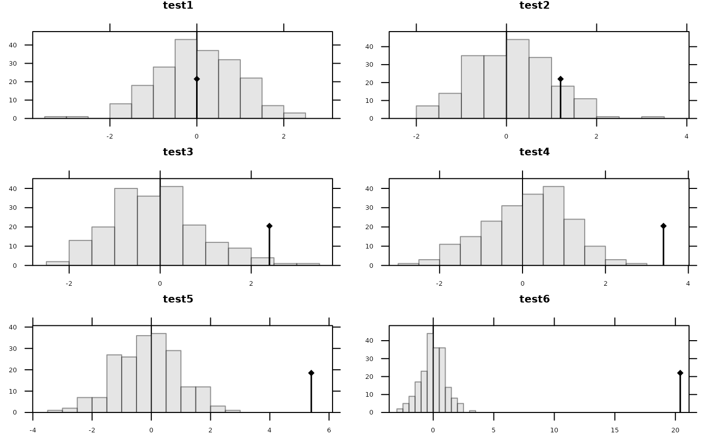

Class of the Permutation Tests (in C).
krandtest.RdPlot, print and extract permutation tests. Objects of class 'krandtest' are lists.
Usage
as.krandtest(sim, obs, alter = "greater", call = match.call(),
names = colnames(sim), p.adjust.method = "none", output = c("light", "full"))
# S3 method for krandtest
plot(x, mfrow = NULL, nclass = 10, main.title = x$names, ...)
# S3 method for krandtest
print(x, ...)
# S3 method for krandtest
[(x, i)
# S3 method for krandtest
[[(x, i)Arguments
- sim
a matrix or data.frame of simulated values (repetitions as rows, number of tests as columns
- obs
a numeric vector of observed values for each test
- alter
a vector of character specifying the alternative hypothesis for each test. Each element must be one of "greater" (default), "less" or "two-sided". The length must be equal to the length of the vector obs, values are recycled if shorter.
- call
a call order
- names
a vector of names for tests
- p.adjust.method
a string indicating a method for multiple adjustment, see
p.adjust.methodsfor possible choices.- output
a character string specifying if all simulations should be stored (
"full"). This was the default untilade41.7-5. Now, by default ("light"), only the distribution of simulated values is stored in elementplotas produced by thehistfunction.- x
an object of class
'krandtest'- mfrow
a vector of the form 'c(nr,nc)', otherwise computed by as special own function
n2mfrow- nclass
a number of intervals for the histogram. Ignored if object output is
"light"- main.title
a string of character for the main title
- ...
further arguments passed to or from other methods
- i
numeric indices specifying elements to extract
Value
plot.krandtest draws the p simulated values histograms and the position of the observed value.
[.krandtest returns a krandtest object and
[[.krandtest returns a randtest object.
Author
Daniel Chessel and Stéphane Dray stephane.dray@univ-lyon1.fr
Examples
wkrandtest <- as.krandtest(obs = c(0, 1.2, 2.4, 3.4, 5.4, 20.4),
sim = matrix(rnorm(6*200), 200, 6))
wkrandtest
#> class: krandtest lightkrandtest
#> Monte-Carlo tests
#> Call: as.krandtest(sim = matrix(rnorm(6 * 200), 200, 6), obs = c(0,
#> 1.2, 2.4, 3.4, 5.4, 20.4))
#>
#> Number of tests: 6
#>
#> Adjustment method for multiple comparisons: none
#> Permutation number: 200
#> Test Obs Std.Obs Alter Pvalue
#> 1 test1 0.0 0.08017023 greater 0.432835821
#> 2 test2 1.2 1.21493586 greater 0.119402985
#> 3 test3 2.4 2.27094873 greater 0.014925373
#> 4 test4 3.4 3.53519471 greater 0.004975124
#> 5 test5 5.4 5.30008954 greater 0.004975124
#> 6 test6 20.4 20.99720018 greater 0.004975124
#>
plot(wkrandtest)

wkrandtest[c(1, 4, 6)]
#> class: krandtest lightkrandtest
#> Monte-Carlo tests
#> Call: `[.krandtest`(x = wkrandtest, i = c(1, 4, 6))
#>
#> Number of tests: 3
#>
#> Adjustment method for multiple comparisons: none
#> Permutation number: 200
#> Test Obs Std.Obs Alter Pvalue
#> 1 test1 0.0 0.08017023 greater 0.432835821
#> 2 test4 3.4 3.53519471 greater 0.004975124
#> 3 test6 20.4 20.99720018 greater 0.004975124
#>
wkrandtest[[1]]
#> Monte-Carlo test
#> Call: `[[.krandtest`(x = wkrandtest, i = 1)
#>
#> Observation: 0
#>
#> Based on 200 replicates
#> Simulated p-value: 0.4328358
#> Alternative hypothesis: greater
#>
#> Std.Obs Expectation Variance
#> 1 0.08017023 -0.08546263 1.066015